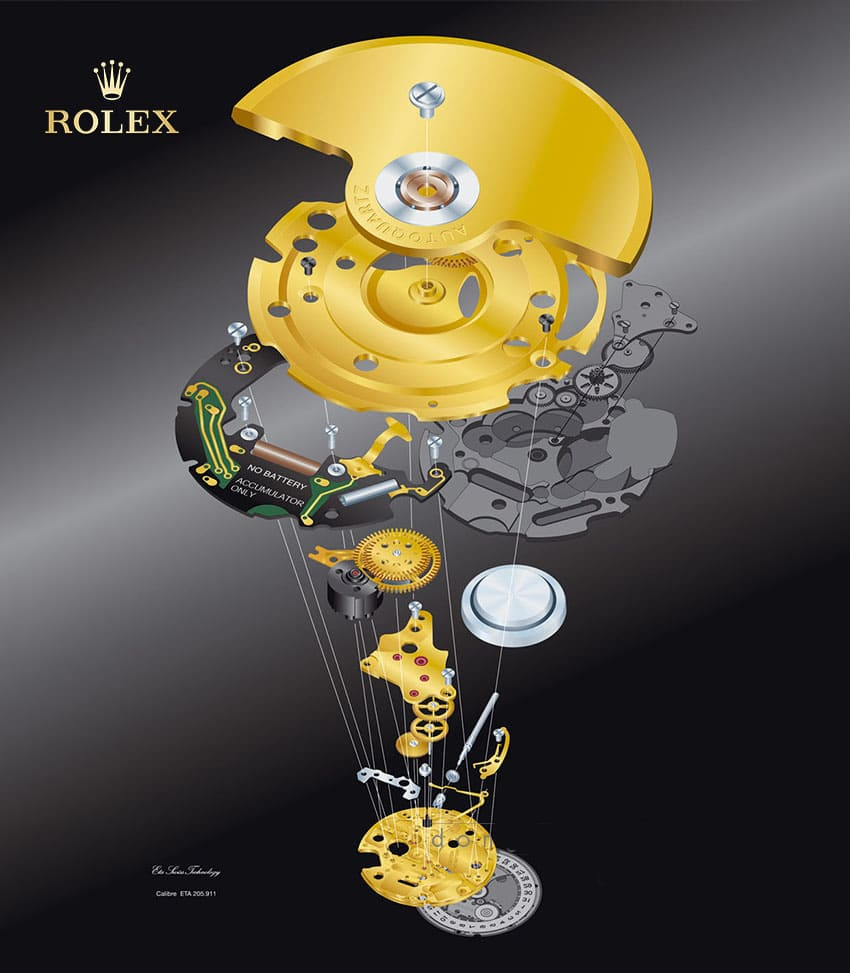
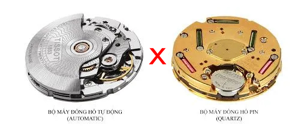

<section class="info__section">
    <div class="container">
        <div class="info__section-wrapper">
            <h2 class="info__section-title">
                ROLEX OYSTER AUTOQUARTZ
            </h2>
            <h3 class="info__section-subtitle">
                SIÊU PHẨM CÔNG NGHỆ CAO
            </h3>
            <p class="info__text">
                Với công nghệ đột phá mới của Rolex 2024 đã cho ra đời 1 <span>phiên bản tích hợp cơ và pin</span> có một không hai trên thế giới gọi là "AUTOQUARTZ". Bộ máy <span class="red">“ AUTOQUARTZ ”</span> dùng để mô tả bộ máy đồng hồ kết hợp cơ chế quay cuộn tự động (như sử dụng trong đồng hồ cơ khí tự động) để <span>tạo ra điện</span> với một tinh thể thạch anh áp điện. Hiểu đơn giản là bộ máy đồng hồ pin có thêm bánh đà, ắc quy sạc (pin sạc)  bộ phận biến đổi năng lượng thành điện năng. <span>Giúp thời lượng pin được tăng lên, không còn sai số thời gian khi sử dụng.</span> Đồng hồ với bộ máy "AUTOQUARTZ" là <span>phiên bản công nghệ cao cấp nhất</span> của ROLEX dự kiến ra mắt chính thức vào 2025. Hiện đã có bản dùng thử
            </p>
            
            <div class="info__block">
                
                <h3 class="info__block-title">
                    AUTOQUARTZ
                </h3>
            </div>
            <div class="info__price">
                GIÁ NIÊM YẾT: 8.900.000vnđ
            </div>
            <div class="info__wrapper-text pulse">
                DUY NHẤT 10 CHIẾC GIÁ 890.000VNĐ TRONG HÔM NAY <br>
                NHÂN DỊP KỶ NIỆM 10 NĂM THÀNH LẬP CỬA HÀNG
            </div>
        </div>
    </div>
</section>